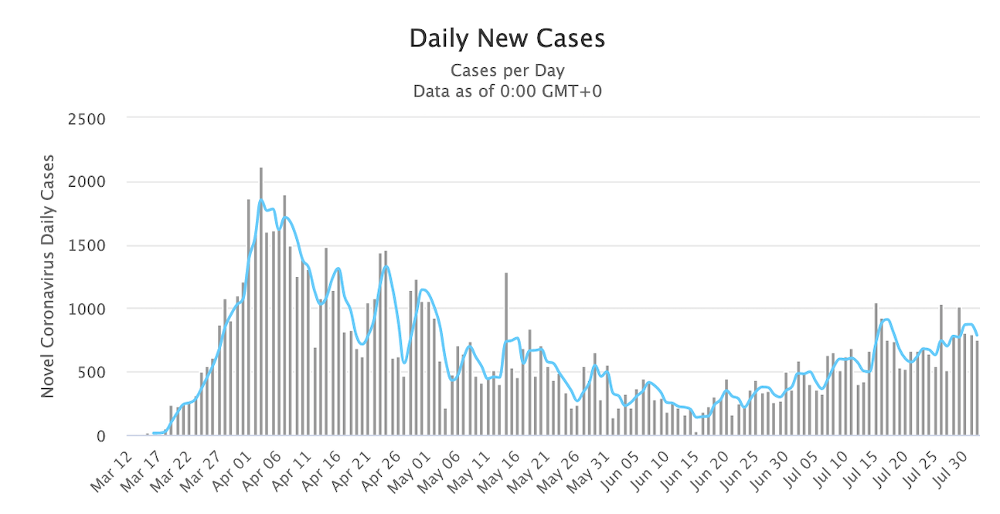
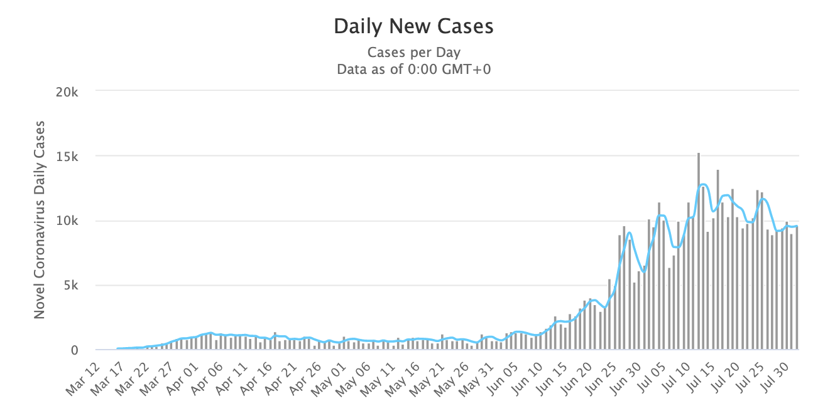

Over the last eight months, the world has been devasted by the coronavirus outbreak, now reaching over 10,000,000 cases and 500,000 deaths worldwide. Many countries have been brought to a complete standstill, with hospitals overwhelmed and the economy tested in what may been the worst recession since World War II.
The first U.S. cases were confirmed in late January in Washington state. Over the next ten days, the global cases climbed by 10,000 and the WHO issued a Global Health Emergency. Community cases began to appear in the U.S. and the disease spread rapidly. In early March, a cruise ship off of California was confirmed to have 21 passengers confirmed positive for coronavirus, and was held at sea. On March 13, after the disease was coined "Covid-19", the Trump administration declared it a National Emergency and banned travel from Europe.
Cases in the U.S. climbed exponentially, and continue to climb to this day. Different states issued different policies, resulting in very different outcomes for citizens.
While Michigan issued a number of executive orders requiring the closing of schools and non-essential businesses, and requiring masks indoors, other states did not follow suit - despite seeing similar climbing numbers.
By June, the U.S. had passed 100,000 deaths and 2 million infections
Michigan's cases spiked early, and quickly declined. Many speculate this is a result of quick action and strict regulation.
Michigan Daily Cases

Daily new cases in MI (Source)
Florida has had little restrictions in place.
Many things have remained open throughout the pandemic, including indoor dining.
Florida is now considered an epicenter of the pandemic, with roughly 10,000 new cases every day.
Florida Daily Cases

Daily new cases in FL (Source)
Google Trends
Google Trends allows us to understand where and how people were searching Google for a certain term over a certain time window.
Within that window, it will pinpoint the date with the maximum number of searches for the term, and then return data in terms of
the percent of that max. If, for example, a term was searched in Michigan 500 times one day, 1000 times the next day, and 2000 times the following day,
the data returned would be 25%, 50%, and 100% respectively. If another state had searches for the same term across the same three days numbering 20, 40, and 80 searches,
Google Trends would also return 25%, 50%, and 100% for that state. This prevents anyone from extracting raw numbers of searches, which could potentially
be used in bad faith by malicious actors or advertisers.
This unique API and its functionality allows us to understand where and when interest in a given term is spiking. In this case, we can examine geographical surges in interest in terms
like "Covid Symptoms", and compare those surges with the surges in the number of new daily Covid-19 symptoms in each state.
It's possible that examining the relationship between these Google searches and the spikes in cases, we can understand potential patterns in the spread of pandemics.
This Tool
Here we can interactive with the data on both Google searches and new daily Covid-19 cases. For the sake of consistency and to match the 0-100 formatting of the
Google Trends data, the data on each state's new daily cases has been scaled to be the percent of the max cases for the given state. This means
each state will show a spike on the left map when it is seeing a surge in the number of Google searches for "Covid Symptoms", and will
similarly show a spike on the right map when the state is seeing a surge in daily Covid-19 cases. Both maps operate using the same 0-100 scale,
representing the percent of the max value (Google searches or Covid-19 cases) for each state in the given map.